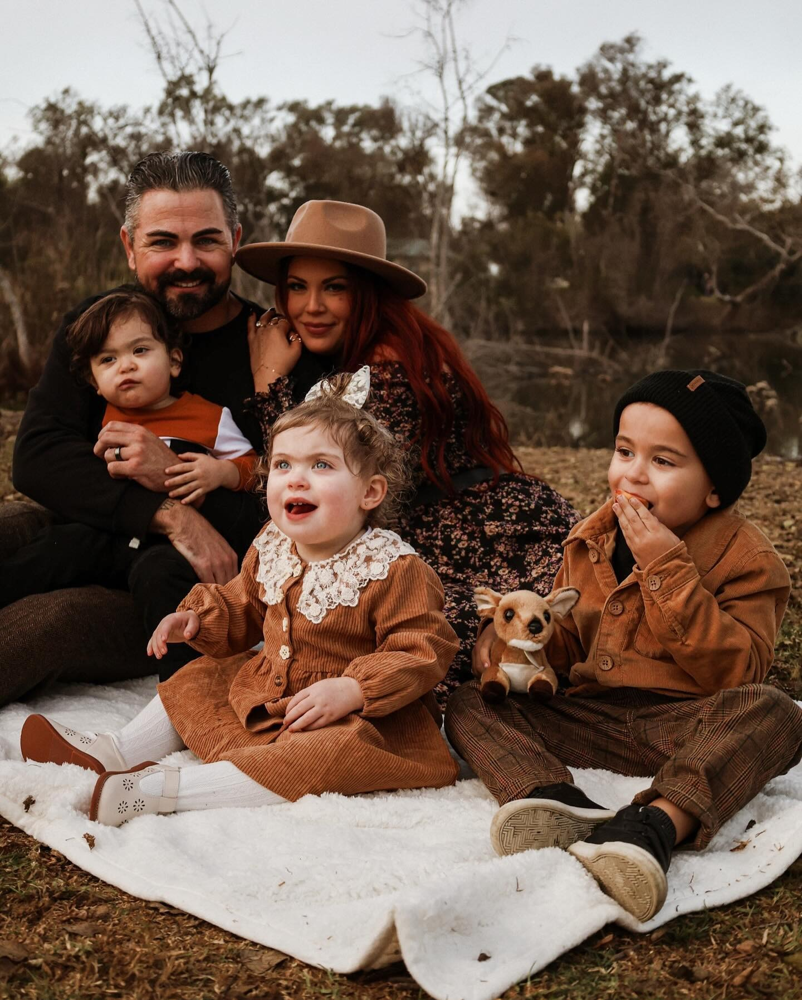

Est. 2016 · Orange County, CA
Photographs that remember for you.
OC Photographer Capturing moments that feel like you Couples • Families • Events
A note
"And we know that in all things God works for the good of those who love him, who have been called according to his purpose."
— Romans 8:28
Selected work
Recent stories
The approach
Slow, unhurried, and deeply personal.
No stiff posing. No forced smiles. Just real moments rendered with care — soft natural light, warm tonality, and a gentle eye for the in-between.
"thank you for being there and capturing all of these wonderful moments @sarahsxlens . Such a beautiful special night"
"Who is SHE?! How do you always unlock a new core memory and fabulous diva in me I adore you so much"

"Thank you for capturing these precious family moments "
Now booking
A few dates remain for this year.
I take a limited number of weddings and family sessions each year so I can give every story my full attention. I'd love to hear yours.